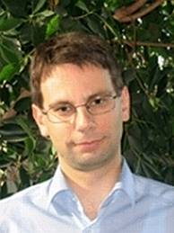
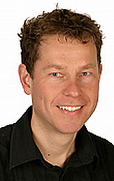
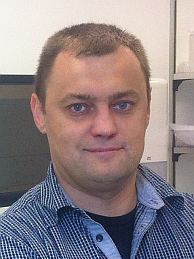
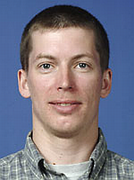

ECCB'12 KEYNOTES:
Søren Brunak
Technical University of Denmark
Aaron Ciechanover
Technion - Israel Institute of Technology
Barry Honig
Columbia University, New York
Laurent Keller
University of Lausanne
Gene Myers
MPI of Molecular Cell Biology and Genetics, Dresden
Mihaela Zavolan
Biozentrum University of Basel & SIB
CONFERENCE CHAIRS:
Torsten Schwede (chair)
Dagmar Iber (co-chair)
ECCB'12 is organized by:


Tutorial 5: RNA-seq
Reads to Biological Patterns: End-to-End Differential Expression Analysis of RNA Sequencing Data Using Bioconductor
Simon Anders, EMBL
Wolfgang Huber, EMBL
Michal Okoniewski, ETHZ
Mark Robinson, University of Zurich
| Date: | 9 September 2012 |
| Time: | 9:00-17:00 |
| Venue: |
Room "Singapore",Congress Center Basel, Messeplatz 21 |
Motivation
RNA sequencing (RNA-seq) is a powerful technique for characterizing RNA transcripts and comparative analyses of their abundances. It is used in many areas of biology including functional genomics, developmental biology and cancer biology. However, the data analysis can be challenging. The computational and statistical methods for analyzing RNA-seq data are recent, and best practices are not yet clearly established. In this tutorial, we will explain the state-of-the-art of RNA-seq analysis.
Overall Goals
Our tutorial will consist of three main components: (i) a hands-on demonstration, walking through an end-to-end analysis of a typical RNA-seq data set from raw reads to biological interpretation, focusing on the use of packages from the Bioconductor project for quality control, counting of features, statistical analysis of differences and downstream interpretive analyses, and discussing each step in detail; (ii) basic lectures on the statistical concepts for count data and on the design and quality assessment of RNA-seq experiments, and an advanced lecture on recent developments, including adjustment for covariates ('normalization'), variance stabilizing transformation, gene set enrichment type analyses; (iii) After each lecture, time is planned in for extensive discussions, where participants can raise questions not only on the content of the lectures but also on implications for their own projects. We finish with an open panel discussion, to address any further topics and questions that participants may have encountered in their work.
We aim to give attendees not just a recipe book for differential expression analysis, but a discussion on the motivation and fundamentals underlying the methods, the strengths and limitations, and insight into the latest research.
Prerequisites and intended audience
Basic knowledge of sequencing technology and basic statistics is assumed, as well as a general understanding of the central dogma of molecular biology and alternative splicing. Attendees will benefit from prior experience using R and Bioconductor, and from some first exposure to high-throughput sequencing data. The intended audience includes: Computational biologists, statisticians and genome biologists with an interest in data analysis and statistical methods.
Tutorial Outline
| Time | Session Details | |
| 9:00 | Introduction (Simon Anders) - overview on the typical work-flow of an RNA-Seq analysis: alignment, counting, testing, downstream analysis - noise in RNA-Seq data: Poisson noise and overdispersion; implications for experimental design - alignment software, Bioconductor packages for counting and testing |
|
| 10:00 |
Demo: A simple but complete analysis - aligning reads to the genome |
|
| 10:30 | Coffee break | |
| 11:00 | Statistical models for count data analysis (Mark Robinson) - the negative binomial distribution - estimation of dispersion and information sharing - normalization considerations - exact test and likelihood-ratio test - generalized linear models - implementation differences between edgeR and DESeq [with Simon] |
|
| 12:00 | Demo: A more complex analysis - use of GLMs to treat a multi-factor design |
|
| 12:30 | Lunch | |
| 13:30 | Alternative isoform regulation (Simon Anders) - quantifying isoform and exon usage - testing for differential exon usage with DEXSeq - testing for alternative isoform expression on the gene level [with Mark] |
|
| 14:15 | Downstream analysis (Mark Robinson) - normalization to account for sample-specific CG biases, etc. - biases due to dependence of power on expression strength, transcript length, etc. - problems caused by this when using downstream analysis methods developed for microarrays - methods for enrichment analyses developed specifically for RNA-Seq data - variance-stabilizing transformation of count data |
|
| 15:00 | Coffee break | |
| 15:30 | Demo: Downstream analysis - Finding gene categories enriched for differentially expressed genes |
|
| 15:45 | Nucleotide coverage profiles (Michal Okoniewski) - coverage-based local normalizations and differential-expression measures - a data processing pipeline for this methodology |
|
| 16:15 | Open panel session: Ask the "expert" | |
| 17:00 | End of Workshop |
Since RNA sequencing is probably the most sophisticated high-throughput technique for transcriptome analysis, there are numerous aspects that can influence the data, processing and interpretation of the outcome in a biological context. Our final session is an open discussion moderated by the tutorial authors. Participants will be invited to join and share their experience, as well as concerns, about the analysis of RNA-seq data. Attendees are encouraged to submit a list of questions for discussion over the course of the first sessions. Possible discussion items may, for example, include:
- Experimental design, replication, advanced experimental setups
- Throughput of sequencers and coverage level considerations
- Tuning the read counting and statistics to solve specific biological problems
- Alternative splicing analysis
- Directed statistics versus unsupervised discovery in RNA sequencing
- Visualization of results
- Integration with microarrays, quantitative proteomics, new genome assemblies, functional analysis
Tutors
|
Simon AndersSimon Anders is a Postdoctoral Fellow in Wolfgang Huber's group at EMBL Heidelberg and author of the widely-used DESeq package for differential expression analysis and the DEXSeq package for differential splicing analyses. He studied physics at the Technische Universität München (Munich, Germany), did his PhD in Innsbruck, and then switched to bioinformatics, first at EMBL-EBI in Hincton/Cambridge and now EMBL in Heidelberg. His current work focuses on statistical methods for the analysis of high-throughput sequencing data. |
|
Wolfgang HuberWolfgang Huber is group leader and senior scientist at the European Molecular Biology Laboratory (EMBL). His research group develops computational and statistical methods to design and analyse novel experimental approaches in genetics and cell biology. He studied theoretical physics in Freiburg, did a postdoc in cheminformatics at IBM Research (Almaden) and a postdoc in bioinformatics at the German Cancer Research Centre (DKFZ Heidelberg). In 2004, he joined EMBL-EBI in Cambridge and in 2009, EMBL's Genome Biology unit in Heidelberg.
|
Michal OkoniewskiMichal Okoniewski is a Systems Expert in Genomics and Transcriptomics at the Functional Genomics Centre Zurich, the core facility operated jointly by University of Zurich and ETH Zurich. Michal is originally a computer scientist who switched his research interests to data analysis and knowledge discovery in transcriptome data. He has research experience spanning nearly 10 years, including positions at the University of Antwerp in Belgium and Cancer Research UK Paterson Institute in Manchester. Currently, he combines the work on customized analysis of over 20 next-generation sequencing projects a year with his own research on the analysis of RNA sequencing data. His input to Bioconductor includes the packages exonmap/xmapcore and rnaSeqMap. |
Mark RobinsonMark Robinson joined the University of Zurich in 2011 as a new Assistant Professor at Institute of Molecular Life Sciences and is co-author of the widely-used edgeR package. He studied Applied Mathematics (BSc, Uni. Guelph) and Statistics (MSc, Uni. British Columbia) and did a PhD in statistical bioinformatics with Gordon Smyth and Terry Speed at the University of Melbourne; he has predoctoral experience at the Banting and Best Department of Medical Research (Uni. Toronto) and postdoctoral experience in the Sue Clark's Cancer Epigenomics group at the Garvan Institute in Sydney. The Robinson group at UZH develops statistical methods for interpreting high-throughput sequencing and other genomics technologies in the context of genome sequencing, gene expression and regulation and analysis of epigenomes. |